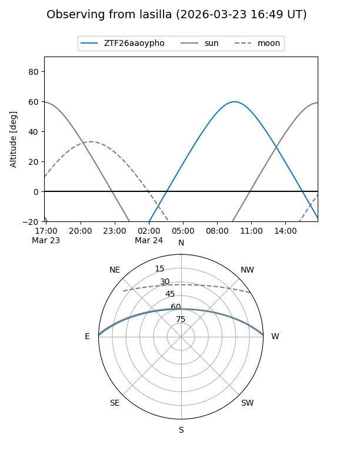
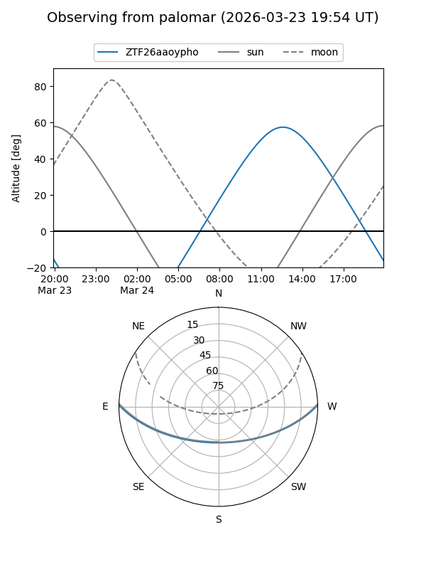

ZTF26aaoypho
Target ZTF26aaoypho at 2026-03-23 13:04
Aliases and brokers:
FINK: link
Lasair: link
ALeRCE: link
alt names
ZTF26aaoypho (ztf,fink_ztf)
Coordinates:
equatorial (ra, dec) = 253.6882,+0.90694
equatorial (HMS+DMS) = 16:54:45.18,+00:54:24.99
galactic (l, b) = (19.5226,+26.16530)
Flags:
Photometry:
last ztfg=19.99
1 ztfg detections
Lightcurve
Visibility


Additional plots